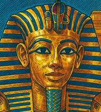

Antiguo Egipto
Uso religioso y simbólico (~3000 a.C.)
🏺 El oro era considerado sagrado. Se usaba en tumbas, templos y objetos funerarios, como la máscara de Tutankamón. Representaba la eternidad y la divinidad.
🏺 El oro era considerado sagrado. Se usaba en tumbas, templos y objetos funerarios, como la máscara de Tutankamón. Representaba la eternidad y la divinidad.
🪙 Los romanos acuñaron monedas de oro (como el aureus) que facilitaron el comercio y establecieron al oro como símbolo de riqueza y poder económico.
⛏️ La búsqueda de oro motivó gran parte de la colonización de América. Los españoles fundieron piezas indígenas para convertirlas en lingotes, cambiando su uso cultural por valor económico.
⚒️ El descubrimiento de oro en California provocó una migración masiva, impulsó la economía y aceleró la expansión del oeste de EE.UU.

💰 Durante décadas, los países respaldaban su moneda con reservas de oro. Este sistema global dio estabilidad al comercio hasta su abandono en 1971 por EE.UU.
🎨 Artistas como Gustav Klimt integraron pan de oro en sus pinturas. El oro pasó de ser un símbolo religioso a una herramienta expresiva del arte contemporáneo.
🧬 El oro comenzó a usarse en tratamientos médicos (artritis), odontología, y más recientemente en nanomedicina para terapias contra el cáncer y detección de enfermedades.
📱 El oro se usa en smartphones, computadoras, satélites y visores de astronautas por su excelente conductividad y resistencia. Es vital en circuitos, conectores y dispositivos de precisión.